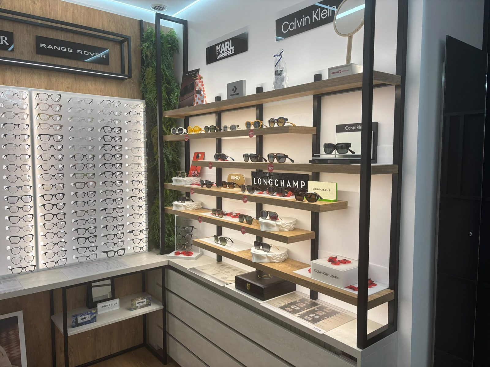

Przygotuj zlecenie
Masz już zlecenie? Przygotuj je do rozmowy w salonie.
REFUNDACJA SOCZEWEK OKULAROWYCH
Masz zlecenie na soczewki okularowe? Zapytaj o możliwość jego realizacji i wysokość dopłaty.
Masz już zlecenie? Przygotuj je do rozmowy w salonie.
Sprawdzimy Twoje zlecenie.
Przed zamówieniem powiemy, ile wyniosą okulary i dopłata.

O możliwość realizacji zlecenia zapytaj w naszym salonie.
Zakres refundacji i dostępne rozwiązania potwierdzimy podczas rozmowy.
Termin ważności sprawdzimy na podstawie Twojego zlecenia.
Zapytaj o dostępne możliwości i indywidualną wycenę.
Zapytaj o dostępny termin.
Poznaj także

Sprawdzimy, jak widzisz, i dobierzemy korekcję.

Oprawki do Twojej twarzy, soczewki do Twojego dnia.
Odwiedź nasz salon w Lublinie.
Mapa Google jest wyłączonaŻeby ją wyświetlić, zaakceptuj pliki cookies Google.